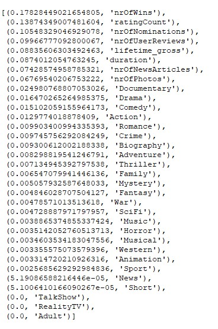

Random Forest

Machine Learning Model - Random Forest
Random forest is a supervised learning algorithm that is comprised of trees.
It is said that the more trees it has, the more robust a forest is.
Random forests create decision trees on randomly selected data samples,
get predictions from each tree and select the best solution by means of voting.
It also provides a pretty good indicator of the important features.
How does the algorithm work?
It works in four steps:
1. Selects random samples from a given dataset.
2. Constructs a decision tree for each sample and gets a prediction result from each decision tree.
3. Performs a vote for each predicted result.
4. Selects the prediction result with the most votes as the final prediction.
Important Features : Random forests also offer a good feature selection indicator,
which shows the relative importance or contribution of each feature in the prediction.
This score will help you choose the most important features and drop the least important
ones for model building.

When categorizing the movie data into success/failure categories, the model had the
following accuracy scores:
Training Data Score: 1.0
Testing Data Score: 0.8964781216648879
Random Forest has the highest accuracy compared to Logistic Regression, KNN and
SVM using performance variable.
The results validate what we learned in class about
the high accuracy of Random Forest. Important Features shown in the image indicate that
the three most important variables to determine importance are nrOfWins, ratingcount
and nrOfNominatons. The least important features Short, News and Sport, TalkShow,
RealityTV and Adult have no influence on performance.